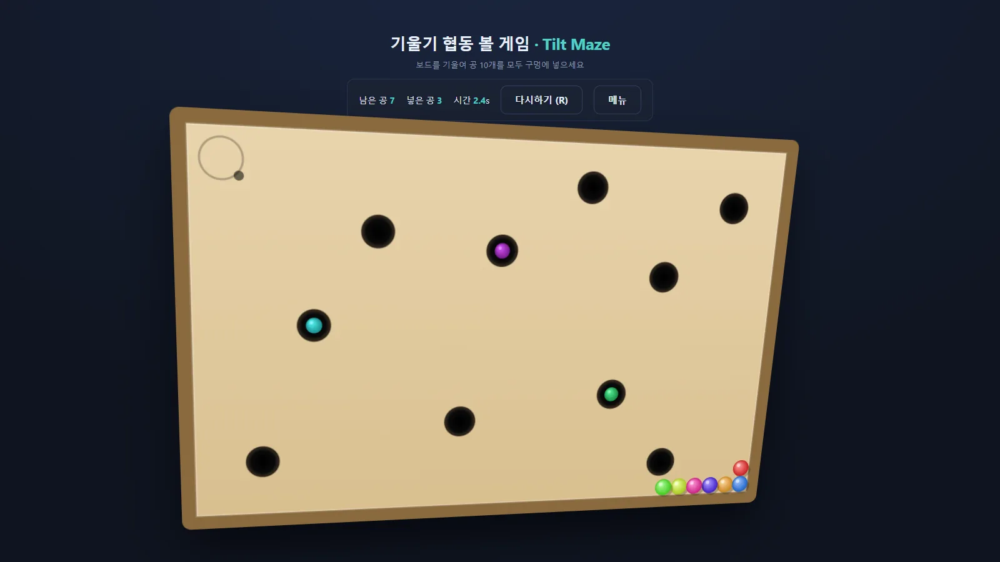
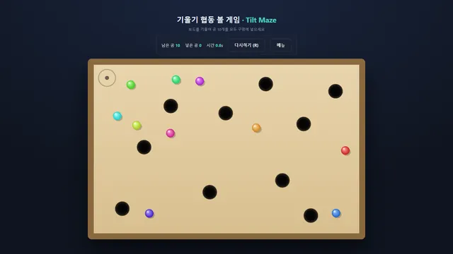
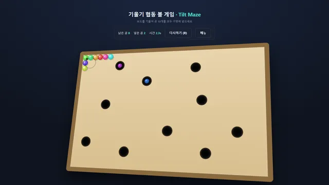
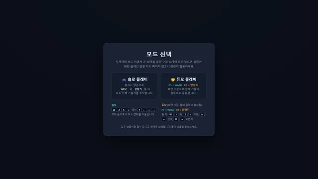
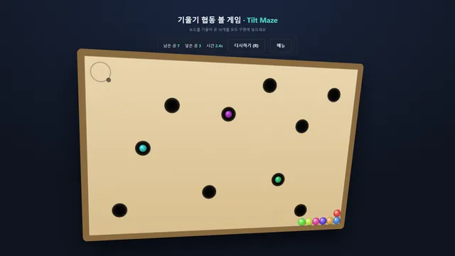

어르신 · 어린이 · 함께
기울기 볼
어르신과 어린이를 위해 만든 게임이에요. 규칙은 단순하게, 함께 맞춰 가며 협동심을 기르도록 만들었어요. 판을 기울여 공 열 개를 구멍 열 개에 모두 넣으면 끝나요. 태블릿으로 하는 것이 기본이고, 태블릿이 없으면 PC 에서 WASD 와 화살표 키로도 할 수 있어요.
개발 중

게임 제목은 「기울기 협동 볼 게임」이에요.
규칙
기울이고, 굴리고, 넣어라
판
직사각형 판 위에 공이 굴러요. 화면에 남은 공, 넣은 공, 걸린 시간이 보여요.
구멍
구멍 자리는 판마다 새로 정해져요. 서로 떨어져 있고, 처음부터 구멍 위에 놓인 공은 없어요.
다시
R 을 누르면 처음부터 다시 해요.
혼자 · 둘이
한 판을 같이 잡아라

혼자
PC 에서는 WASD 와 화살표 키 둘 다로 판 전체를 기울여요. 양손을 같이 써도 돼요.

둘이
PC 에서는 한 사람은 WASD, 다른 사람은 화살표 키. 화면을 기준으로 같은 쪽을 누르면 힘이 모이고, 반대쪽을 누르면 서로 지워져요.
사진
게임 화면

처음 화면시작

기울이기둘이